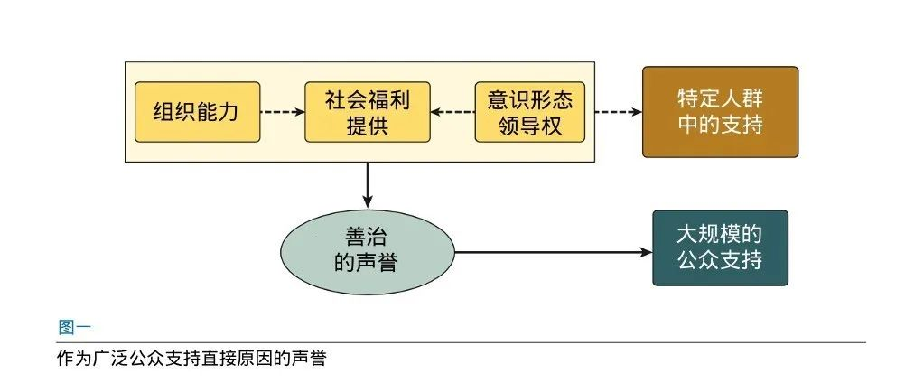

收录于合集

作品简介
【作者】
梅拉尼·卡梅特（Melani Cammett）是哈佛大学政治学系教授，同时也是哈佛国际与地区研究院（Harvard Academy for International and Area Studies）的主任。其主要研究方向为发展政治、身份政治和中东地区，主要著作有《中东地区的政治经济》（A Political Economy of the Middle East）、《有同情心的社群主义：黎巴嫩的福利和宗派主义》（Compassionate Communalism: Welfare and Sectarianism in Lebanon）等；
保琳娜·琼斯·隆格（Pauline Jones Luong）是密歇根大学政治学系教授，主要研究方向是以下类别国家的制度起源与变革：具有次国家层次身份认同（sub-national identity）的新生国家、从计划经济向市场经济转型的国家、自然资源丰富的国家、穆斯林人口占多数的国家等。
【编译】 ****许文婷（国政学人编译员，北京大学）
【校对】 崔宇涵
【审核】 周玫琳
【排版】 贺奕
【来源】 Cammett, M., & Luong, P. J. (2014). Is there an Islamist political advantage?. Annual Review of Political Science , 17, 187-206.
期刊介绍
《政治科学年度评论》（Annual Review of Political Science）是年度评论系列（Annual Reviews）旗下的一本年度刊物。该刊自1998年出版以来，涵盖了政治学领域的重要发展，包括政治理论与哲学、国际关系、政治经济学、政治行为、美国与比较政治学、公共行政与政策以及方法论等。根据2019年发布的期刊引证报告（Journal Citation Report，JCR)，其2019年的影响因子为3.915。
存在伊斯兰主义的政治优势吗？
Is There an Islamist Political Advantage?
内容提要
学界普遍推测，与其竞争者相比，伊斯兰主义者在产生大众吸引力和赢得选举方面存在优势。但问题在于这些优势，或者说一种被我们统称为伊斯兰主义者的政治优势（political advantage）是否真的存在？
本文认为就伊斯兰主义者具有的政治优势而言，其主要来源是善治的声誉（reputation），而并非提供社会服务、组织能力或者意识形态领导权。本文并非要驳斥学术文献和媒体叙事中所认定的伊斯兰政治优势的主要来源，而是提出一种不同的因果路径，其中每一种因素单独或共同地促进了伊斯兰主义者获得称职、值得信赖和纯洁的声誉。也正是这种善治的声誉使得伊斯兰主义者能够积聚公众支持，并使其选举收益超出与他们直接接触或有意识形态亲和力的那部分人群，从而在街头运动和选举中脱颖而出。
文章导读
一、导言
伊斯兰主义者在阿拉伯剧变后第一波竞争性选举中的强势表现（尤其是埃及和突尼斯）似乎证实了伊斯兰主义者在选举领域具有优势这一广泛的信念。尽管自由、世俗与青年团体是导致两国在位已久的独裁者们被驱逐的抗议的发起人，在这两国的国民议会中是伊斯兰主义政党赢得了相对多数（突尼斯）或多数席位（埃及）。但问题在于这些优势，或者说一种我们统称为伊斯兰主义的政治优势（political advantage）是否真的存在？由于缺乏经验证据和国家间的系统分析，这种优势的存在是广泛地被假定而不是被证明的。因此，学者们专注于解释政治伊斯兰（或伊斯兰主义）的兴起，而不是民众对伊斯兰主义者支持的差异，特别是在赢得选举方面。本文的目的是将我们的分析重点转移到后一个问题，该问题只会随着可靠数据获取的改善和更多跨国案例的出现而变得越来越重要。因此，我们并不将伊斯兰主义者的政治优势视为理所当然，而是寻求确定在何时，何地以及如何期望伊斯兰主义者在街头和选举中获得广泛支持。
我们将首先阐明构成伊斯兰政治优势的两个领域的性质，并解决相关数据和衡量问题。此后，我们将探讨一系列可能的解释，以解释伊斯兰主义者为何具有独特的优势，并着重说明每种优势与伊斯兰主义者在产生群众吸引力和赢得选举方面的卓越能力之间的联系。现存的解释强调提供福利、组织能力和意识形态对伊斯兰主义者获得公众支持产生了直接的作用。而相反，本文认为就伊斯兰主义者具有的政治优势而言，其主要来源是善治的声誉（reputation）。由于他们提供必要的社会服务，与社区有着强有力的联系，并且拥有强大的精神基础，伊斯兰主义者们能够从组织和个人层面上都培养出一种与竞争者们相比所独具的有能力、可靠且纯洁的声誉。本文并非要驳斥学术文献和媒体叙事中所认定的伊斯兰政治优势的主要来源，而是提出一种不同的因果路径，其中每一种因素单独或共同地促进了伊斯兰主义者获得称职、值得信赖和纯洁的声誉。也正是这种善治的声誉使得伊斯兰主义者能够积聚公众支持，并使其选举收益超出与他们直接接触或有意识形态亲和力的那部分人群，在街头运动和选举中脱颖而出。
然而声誉作为大众支持的基础是脆弱的。伊斯兰主义者们在威权统治下积累的善治的声誉并不能自动地转换到民主的语境中。当伊斯兰主义者参加选举并上台执政后，他们的这种声望极容易丧失，而选民们也将对他们的失职、欺诈、腐败等行为施以更严厉的惩罚，因为他们辜负了这种口碑。因此，解释伊斯兰主义者在获得广泛支持能力方面差异的关键，就在于他们保持并利用其政治优势的声誉来源的能力。
二、伊斯兰主义者政治优势的本质
学术文献和民间叙事都强调伊斯兰主义者在穆斯林占主导的国家里在两方面表现突出：一是在专制政权下产生大众吸引力，二是在后威权时代的选举中表现出色。尽管这两方面明显存在关联，但它们之间的区别也很关键，因为它们是在不同的政治环境中运行的。前者说明伊斯兰主义者是对现存威权政权最有力的挑战者，而后者说明伊斯兰主义者是政权转型中最可能的赢家。区分这两种政治优势也有助于我们更好的理解它们在实证和理论层面是如何相互联系的。
1、威权统治下的大众吸引力
学界普遍认为伊斯兰主义者在穆斯林人口中受到广泛欢迎。具体而言，有学者断言它们在“社会底层” 或被剥夺者（如“年轻的城市贫民”和“虔诚的中产阶级”）中“有着广泛吸引力” 。这实际上意味着伊斯兰主义者被认为在威权环境中在产生和动员广泛的大众支持方面比他们的竞争者更有能力。这一优势的本质是伊斯兰主义者在主导社会话语、引领对现政权的反抗方面比其他反对组织更高的地位。
尽管政治伊斯兰具体的起源和分类是有争议的，但伊斯兰主义在穆斯林占主导的国家上升成为大众动员的基础被广泛认为是十分晚近的发展。大多数学者认为20世纪70年代后期是重要的转折点——当时伊斯兰主义“在社会中站稳了脚跟”，并认为他们的主导地位持续了大约30年。
但持这种观点的人面临着一个棘手的测量问题。简言之，由于大多数穆斯林国家长年被威权政权统治，他们对公民社会，尤其是反叛实行严格的控制，可靠的观测数据十分稀缺。首先，伊斯兰主义者通常被迫转入地下，作为秘密组织开展活动，这使得对他们的规模进行准确的评估十分困难。其次，群众抗议或示威很少发生，也可以是自上而下发起的，且并不一定代表在某个或某组议题之外广泛的民众支持。第三，在大多数国家很难（甚至不可能）对伊斯兰主义组织的草根成员进行采访或者做大规模的田野调查，而这些方式能够提供对有关伊斯兰主义者的公众态度的更准确的评估。最后，如果举行选举，那它们充其量也只是半竞争性选举，伊斯兰主义者无法或者不会充分地参与其中。
因此，学者们很少能够说明伊斯兰主义者确实有着“大众吸引力”。其结果是，学者们倾向于将宗教热忱和伊斯兰主义的兴起相互混淆，而将伊斯兰主义者的兴起和大众对伊斯兰主义的支持混为一谈。其他的一些学者则将一些数据收集较为容易、伊斯兰主义者的活动更易观测的单一国家的经验进行一般化，却不顾这些案例众所周知的特殊性。此外，那些希望为伊斯兰主义者的广受欢迎提供更多系统性证据的学者倾向于使用可获得的选举数据，但它们最多也只能粗略估计其在一部分人中的吸引力。
2、政权转型中的选举表现
亦有一种普遍的假定认为，伊斯兰主义者会从政权更迭中获益最多，尤其是在自由公平选举被引进的情况下，因为他们是“唯一能赢得（此类）选举的人”。确实，这使得许多美国政策制定者和现政权不愿支持中东北非地区民主化乃至伊斯兰主义者参加竞争性选举。它也促使了对推迟这类选举的偏好。重要的是，假定下伊斯兰主义者的选举优势是和他们的其他被声称的政治优势直接关联的。简言之，正因为伊斯兰主义运动不仅广受欢迎，还主导了在威权统治下的反对势力，所以他们才摆开架势准备横扫民主选举。因此这一优势的本质是，伊斯兰主义者在利用革命时刻和赢得创始性选举方面较其挑战者更有优势。
在这里，学者们也受到可靠数据不足的限制。在威权（或半威权）政权的背景下，伊斯兰主义者赢得竞争性选举的前景的默认指标通常是其在半竞争性选举中的表现。尽管这似乎是合理的，但它忽略了解读上述选举结果的困难。同样地，这种指标选择还让我们（错误地）预估政党和选民在不同的选举规则和竞争环境下的表现一成不变。由于竞争性选举过于罕见，学者们也从特殊且通常耸人听闻的案例中获取推断，但其结果往往是不准确的。因此，在从这种情况下得出结论时，我们应该谨慎。我们更应该利用这些机会来把伊斯兰主义者更有可能在竞争性选举中获胜的条件具体化。
聚焦于伊斯兰主义者的选举胜利，也使我们不再质疑他们在创始性选举中几乎难逢敌手这一假定。基于伊斯兰主义者在镇压下与世俗反对派相比表现出的韧性，他们的挑战者被视为软弱、不存在，或是在很大程度上妥协让步的。但是世俗反对派的相对力量是有差异的，即使是在我们最未预料的地方：中东和北非地区，以及其他的伊斯兰国家。
三、伊斯兰主义者政治优势的来源
现有文献提供了一长串国际与国内层面的因素，以解释20世纪下半叶伊斯兰主义在穆斯林世界兴起，包括1967年战争中阿拉伯人败于以色列和伊朗革命等地区事件，全球资本主义秩序的传播、宗教狂热在习惯了基于宗教的政治权威的民众中的兴起等国际趋势，以及政治镇压、国家的衰落、社会经济挫败等国内因素。上述文献为理解伊斯兰运动的出现和扩散，特别是中东和北非地区的伊斯兰运动提供了重要的背景。但是，它们在阐明这些运动的大众支持的决定因素以及解释为什么在个人、次国家和国家层次上和在活动的不同领域中支持程度的不同帮助较小。归根结底，伊斯兰主义的出现和对伊斯兰主义者的支持是相关的，但在分析上应该区别开来。因此，本文将分析重点转移到质询为什么我们预期伊斯兰主义者在街头和选举中获得广泛支持，而不是为什么他们一开始会出现在社会政治舞台上。换言之，如果伊斯兰主义者的确有政治优势，这种优势的潜在来源是什么？接下来，本文探讨在文献中最常被确定为创造这种优势的三个因素：社会福利的提供、组织能力和意识形态领导权。作者认为，尽管所有这些因素都可以解释为什么部分人口可能支持伊斯兰主义者，但没有一个可以单独解释伊斯兰主义者产生广泛追随者和赢得创始性选举的能力。简而言之，伊斯兰主义者需要具有比已有证据证实的更宽泛的影响力（才能获得上述成功）。
1、非国家社会福利的提供
一个经常被提及的伊斯兰主义者政治优势的来源是他们能有效提供社会福利。简言之，据说社会服务的提供使伊斯兰主义者能够证明其善治的资质并赢得民众的爱戴与认同。一个常见的（却未证实的）主张是，提供社会福利是一种收买选票的方式。换句话说，提供服务可以为伊斯兰主义者提供选举支持，因为选民会以选票向他们表示感谢。
这种解释的关键假定是伊斯兰主义者是基本社会服务乃至公共物品的主要提供者，因此，说明伊斯兰主义者确实或是被认为是与其他人相比更有效地提供了社会服务，或是至少受益者们对伊斯兰主义者提供的福利与对其他人提供的福利相比更为感激就是至关重要的。此外，必须将伊斯兰主义者关于社会服务质量的客观和主观指标与对这些群体的政治支持系统地联系起来。然而，迄今为止的经验证据并未证实这些主张。关于伊斯兰主义者社会福利计划的大多数主张都基于很少的硬数据（如果有的话）。现存解释也未能就伊斯兰主义组织所提供服务的相对程度与质量提供系统性的证据。有充分的理由相信，更可靠的数据将表明：第一，伊斯兰主义提供者的数量少于通常假定的数量，其次，其他类型的提供者（宗教和世俗的）数量更多，但由于它们集中化程度较低而更容易被忽视。
确定社会福利机构组织隶属关系的挑战也阻碍了对伊斯兰主义者所提供的社会福利的性质、程度和质量的系统衡量。提供者们与伊斯兰主义组织间的关系并非总是明确的，即使是这些联系被断言存在。而即使有关社会服务提供者的组织隶属关系的信息有效，通常也无法获得有关由伊斯兰主义者提供的福利机构所提供服务的内容和质量的可靠数据。对于非国家社会服务提供的评估至少需要衡量场所可用的基础设施，提供服务的质量及与受益者的互动，以及提供服务的成本。此外，这些客观指标也需要主观测量的补充，特别是客户和社区成员对于作为提供者的伊斯兰主义者的看法。此外，要宣称伊斯兰主义者服务提供的优越性，还需要有关给定社区中所有类型的提供者（国家和非国家）提供的服务质量的数据。因此，对伊斯兰主义者的活动和机构与非伊斯兰提供者的全部活动进行结构性比较至关重要。
总而言之，社会福利的提供与对伊斯兰主义者的支持之间的因果关系建立在一个关键的但尚未从经验上得到证实的假定上，即伊斯兰主义者比其他提供者更有效，更广泛地提供社会服务。然而，学术文献和媒体报道都没有告诉我们为什么伊斯兰主义者如此有效地填补了国家留下的社会福利空白，以及为什么他们选择了这样做。正如我们将在下面看到的那样，这些问题的答案可能在于伊斯兰政治优势的另外两个潜在来源，即组织能力和意识形态领导权。
2、组织能力
伊斯兰政治优势的另一主要解释是其相对的组织能力。与提供社会福利类似，伊斯兰主义者的组织资源和能力通常在学术和媒体解释中都被认为远远优于其竞争对手甚至是国家本身。这些资源包括物质性的和非物质的，其中包括清真寺、慈善机构、学校和福利机构等有形基础设施；以工作人员、志愿者、社区活动家及其计划受益者等形式呈现的人力资本，它们构成了支持者社交网络的基础；很大程度上在政治压迫的条件下形成的类似细胞的组织结构；以及其人员显而易见的管理和技术技能，这有助于其项目的高效运行，并使伊斯兰主义者能够在特定活动中以及甚至在其所处的地区保持秩序和纪律。除了他们的基础设施、本地网络和忠诚的干部外，伊斯兰主义者自给自足的能力增强了他们提供优质社会福利的能力。穆斯林福利机构和伊斯兰主义组织似乎是从一系列伊斯兰慈善义务和自愿奉献中受益的，它们包括天课（zakat）、布施（sadaqa）和伍一税（khums）等。虔诚的支持者或伊斯兰组织本身所拥有的劳务汇款和企业提供了另一种潜在的资金来源。
重要的是，构成伊斯兰主义者卓越组织能力基础的各种资源有一个共同的来源：认定威权政权根本无法关闭清真寺。这使伊斯兰主义者能够建立和扩大其组织基础设施，从而鼓励他们超越其他形式的反对派。相同的逻辑适用于独立的资金来源，尤其是在个人捐款方面，其前提是国家无法阻止穆斯林履行其慈善义务。因此，许多学者将伊斯兰主义者建立广泛吸引力的能力归功于清真寺在创建和维护忠实干部和同情者网络中所起的关键作用。
总的来说，组织资源有助于建立和维护稳固的积极分子网络，从而为运动提供支持。关键机制是网络本身，据称有两种类型在起作用。第一种类似于“粘合”（bonding），它强调了社区网络在建立本地支持中的作用。立足本地社区的积极分子间的面对面交流有助于他们传达信息，从而扩大运动范围。第二种类型大致对应于“牵线搭桥”（bridging），强调了诸如清真寺之类的实体机构如何将分散在各地的支持者和同情者群体联系起来以形成更大的全国性网络。诸如实体机构之类的组织资源构成了可以动员选民的驱力和竞选管理活动的基础。更重要的是，可能在这些实体机构中运作的积极分子网络对于选举活动的成功至关重要。
尽管很受欢迎，但由于以下几个原因，伊斯兰主义者的相对组织能力仍不能令人满意地解释伊斯兰的政治优势。首先，它所基于的前提不能经受检验，比如埃及政府确实有能力也已经关闭了他们认为被用于散布政治异见的清真寺。第二，伊斯兰主义者的组织影响力可能被夸大了。尽管伊斯兰主义者可能会从他们在清真寺、学校和其他社会机构中的影响中受益，但他们在组织工人方面面临严重的障碍，因为他们始终无法渗透工厂。第三，伊斯兰主义者在威权或半威权环境中在基层建立和维持组织实力的能力的独特性也可能被夸大了。第四，仅组织能力（无论其扩展性和独特性如何）无法解释大众吸引力或广泛的选举支持。组织能力最好被视为有助于但不能充分解释社会动员的因素；伊斯兰主义者向大众传播信息的结构性能力，无法解释为什么这种信息会引起如此广泛的共鸣。最后，由于上述所有原因，认为伊斯兰主义者的网络是一个“粘合”而非“牵线搭桥”的因果关系机制是更合理的。也就是说，它们在当地社区内部而不是在不同地区之间产生支持。
同样，获取独立财务资源的解释力也有限。仅仅凭金钱来解释所谓的伊斯兰政治优势就太天真了。首先，伊斯兰主义者并不是唯一拥有大量财力的群体。其次，金钱与其他形式的组织资源一样，无法解释伊斯兰主义者的呼吁为何引起共鸣，也不能令人信服地解释为何积极分子或支持者愿意在威权统治下冒着自身和物质福祉的风险。为了在政治压制下支持伊斯兰主义者，人民必须以金钱无法买到的方式被感动。正如其他人已经认识到的，这表明需要研究意识形态的作用。
3、意识形态领导权
伊斯兰政治优势的另一个通常被引用的来源是我们所谓的意识形态领导权。学者们从伊斯兰的本质及其对阿拉伯文化的影响或特定的结构- 历史条件中找到了这种领导权的起源。前者通常采取一种本质主义的形式，在这种形式中，意识形态领导权与伊斯兰作为社会组织的整体系统直接联系在一起。另一种在学术文献中更为普遍的不那么本质主义、将之置于历史背景的方法通常认为其取决于其他意识形态的失败，特别是民族主义的失败，从而使伊斯兰主义能够填补空白。
意识形态领导权最常被用来解释伊斯兰主义者为何能够引起广泛的群众吸引力。尽管没有明确说明，但该机制似乎是框架化的。也就是说，如果我们将意识形态领导权理解为一个群体为大多数人定义现实的能力，那么它就为伊斯兰主义者提供了一个可用的框架，用以展示他们的解决方法对当前的问题是最为合理的。更具体地讲，伊斯兰主义被巧妙地描绘为穆斯林重申自己的最佳或最真实的方式，这不仅是对殖民主义和新殖民主义的回应，也是对“腐败，疲惫和无效的政权”的回应。
意识形态主导也可能产生于其他所谓的伊斯兰政治优势的来源中，特别是社会福利的提供。在此，伊斯兰主义者能够享有领导权，因为他们是唯一能够令人信服地宣称社会福利是其教义的组成部分的反对团体或非国家行为体，这使他们能够将其广泛议程作为促进社会公正和提供服务的框架，并将之作为核心职责和必不可少的核心活动。首先，这增加了政府关闭清真寺及其附属的伊斯兰慈善机构的成本。其次，它降低了招募成本，因为伊斯兰主义者可以接触到一批敬业的志愿人员和训练有素的专业人员，他们将自己的工作视为虔诚和奉献的体现。
现有文献在将意识形态领导权与选举动员联系起来方面也同样是含糊不清的。然而，从以下观点来看，文化主导地位的概念是显而易见的：伊斯兰主义者提出了一种独特的主张来代表宗教，更具体地说是代表伊斯兰的执政信仰。因此，他们可以将自己描绘成是唯一有资格实施其对本国问题的解决方案（即伊斯兰教）的政治参与者。所以对伊斯兰主义者的选举支持通常是由希望将宗教在国家事务中发挥更大作用的愿望驱动的，这是对“腐败，疲惫和无效政权”现状的唯一“真实选择”。
这一解释的长处在于，它对为什么伊斯兰主义能够产生广泛吸引力有了更深入的洞见。意识形态还成为其他解释中所缺乏的民众支持与群众动员之间的关键联系：通过调用一个共同的身份认同，它成为一种统一的力量，可以跨越社会的各个阶层。同样，意识形态对为什么组成伊斯兰主义网络并提供服务的干事如此忠诚以及为什么伊斯兰主义者选择将其财政资源用于社会服务提供了合理的解释。但是，意识形态主导在解释伊斯兰主义者超越反对票赢得选举的能力方面远没有那么有效。诚然，伊斯兰主义者有一个核心支持者团体，他们根据意识形态上的亲和力投票支持伊斯兰主义者，这是因为他们共享伊斯兰政党的信念和政策议程。然而，他们似乎是人口中的少数。这一说法也并不具备完全的解释力。
四、作为直接原因的声誉
本文的论点并不是说社会服务的提供、组织能力和意识形态领导权没有对所谓的伊斯兰主义者政治优势作出任何贡献。相反，我们假设所有这些因素都间接影响了伊斯兰主义者政治优势的真正来源——善治的声誉。可以肯定的是，对于某些群体而言，社会福利活动和意识形态吸引力将具有直接的因果关系，但这些人很可能只是人口中的少数。具体来说，我们假设提供社会服务、组织能力和意识形态领导权以一种信号传递的方式起作用，它们为伊斯兰主义者塑造了一种独特的名声：有能力、值得信赖且纯洁，这使他们获得了广泛的公众支持。也正因此，这种声誉的观点与收买选票的逻辑不同：良好的治理履历使得人们投票支持伊斯兰主义者，并不是因为他们直接获得了利益，而是因为提供社会福利使伊斯兰主义者更受欢迎。

伊斯兰主义者相对的组织力量也类似地提高了关于其能力的声誉，这与现任政权和其他反对派团体的声誉形成鲜明对比。伊斯兰机构（例如清真寺、福利机构、学校、职业培训中心、古兰经研究小组等）的实际基础设施，以及敬业的干部网络，为实际和潜在的支持者提供了可胜任的印象。而有能力胜任的声望也使伊斯兰主义者的观点成为改变现状的可靠替代方法，从而推定了这样的假设：他们比其他提供者更有能力提供高质量的社会福利服务，并最终鼓励那些对现政权感到沮丧的人投票给伊斯兰主义政党和候选人。除其他因素外，这种声誉优势有助于解释为什么尽管伊斯兰主义者组织范围有限，而且政府偶尔会对清真寺和其他伊斯兰机构进行镇压，但他们依然会取得成功。
获得独立的资金来源可以增强伊斯兰主义者的能力声誉，并树立可信赖的和财务诚信的形象。但是，独立财务资源与善治声誉之间的关系取决于收入的来源和投资方式。只有资金来源正当合法，并且被用于符合宗教信仰的金融工具时，伊斯兰主义者才会赢得可信赖并且言行一致的形象。
意识形态主导在提高纯洁的声誉方面的作用更为直接。伊斯兰主义者自称渴望建立一个以伊斯兰规范为基础的社会，因此他们自动以诚实，公平和廉洁赢得声誉。通过促进社会正义议程，伊斯兰主义者传达了其纯洁而仁慈的意图。尽管意识形态和声誉联系紧密，但它们并非完全相同。意识形态是关于宗教教义本身的内容（这里是社会正义），而声誉是指对实现这一教义的一种承诺。
五、结论
本文提出了两个主要论点。首先，作者认为由于缺乏实证证据和跨国的系统分析，伊斯兰主义者政治优势的存在是被假设的，而并未得到证明。因此，学者们聚焦于解释伊斯兰主义的兴起，而非伊斯兰主义者公众支持的变化，尤其是在赢得选举方面。其次，作者为这种变化提供了另一种解释。本文认为，就伊斯兰主义者拥有的政治优势而言，这种优势的主要来源是声誉，而不是提供社会服务，组织能力或意识形态主导权。善治的名声使伊斯兰主义者能在街头政治和选举中胜出。然而，如果他们面对可以合法地声称自己是有能力，值得信赖或纯洁的竞争者，或者当政权无能，腐败猖獗和道德堕落等问题不是效价问题（valence issue）时，伊斯兰主义者就不太可能获得广泛的民众支持。
本文的论点对埃及、突尼斯及其他地区的伊斯兰主义者的未来选举前景具有重要意义。如果声誉是伊斯兰主义超越竞争对手的主要来源，那么其假定的政治优势可能不如所描绘的那么强大。特别是其善治的履历是基于在威权统治下发生的行动、事件和观点而建立的，不一定能被转换到后威权的环境中。在政权转型期间，当伊斯兰主义者不再需要在准法律环境中行动时，如果他们不履行自己的主张或与自己的原则和意识形态相抵触，就很容易损害他们的声誉。伊斯兰主义者提供口号而不是解决方案的能力也会随着时间的推移而使他们事与愿违。当他们掌权后，他们也会被迫采取明确的政策立场，犯下不可避免的错误，并做出无法接受的妥协，这是正常政治活动的一部分。
_ ** _ ** _ ** _ 本文由国政学人独家编译推荐，文章观点不代表本平台观点，转载请联系授权。**__